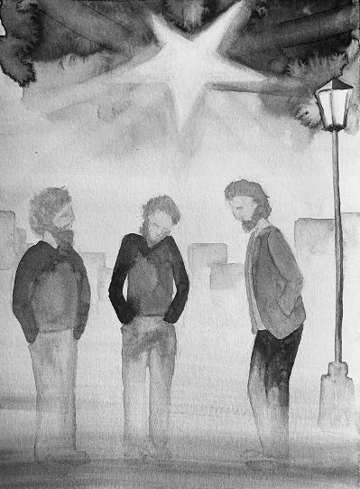

The midnight air was a crystal vise
Crushing a billion bits of ice –
One stood out grand and glaring.
Mary, a virgin in her bearing,
Joseph trying to make the best
Of expectations. You know the rest:
Denied the use of house and table,
The birth took place in a humble stable.
Shepherds, black and yellow kings,
The sky a feast of angels' wings.
Thirty years later came the dove,
Ushering in the age of love.
The Return of the Magi

This town is one we've seen before:
These crooked lanes, that stable door,
Although it must have been a dream,
For never were we here before.
And that quick dog, scared and lean,
Crossing the square scarcely seen
And the dark-haired girl leaning out
The hostel window familiar seem.
The sky was lit by the evening star
As now, but brighter then by far;
Above us shuddered angels' wings
And we had journeyed far, so far.